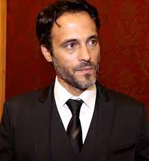

Hollywood is an area in Los Angeles County in the state of California in the United States of America between the west and northwest of the city center of Los Angeles.
The reason for its fame is the presence of the movie studios and the international stars in it, it is the historical center of American cinema and American actors.
|
Youssef Al-Sharif is Egyptian actor. His real name Mohammed Ismail Naji, was his first appearance in the film seven papers kuchinh in the starring role, and then took part in the film open your eyes, serial client 1001, and the series on the backburner, and the series of Cinderella, film Halim in 2006, and he starred in the film The last of the world in 2006, until director Youssef Chahine chose him in 2007 to participate in his last film before his death, "هي فوضى" |
 |